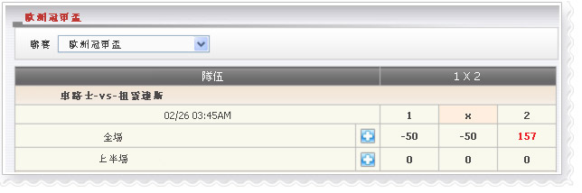

1x2
代理贏/ 輸預測每場投注種類 1x2

1x2
在這個例子中,會員投注 切爾希-vs- 尤文圖斯,金額 = 100, 賠率 = 4.14, 代理占成 = 50%, 投注種類 = 1x2, 會員選擇 :全場.2意思客隊(尤文圖斯)將贏全場.
如果全場的賽果是主贏或和然後會員將輸
--> 代理將贏: 100 * 50% =
50
如果全場的賽果是客贏然後會員將贏
--> 代理將輸: 100 * ( 4.14-1) * 50% =
157